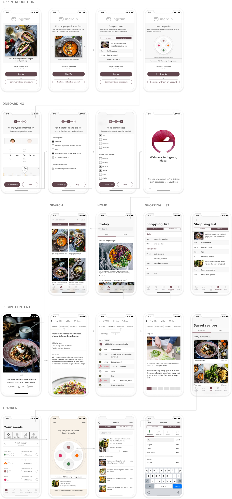

ROLES
- UX Designer
- Visual Design
DELIVERABLES
- User Surveys
- Personas
- Competitive Analysis
- User Stories
- User Flows
- Wireframes
- User Testing
- Visual Design
- InVision Prototype
SPECIFICATIONS
DURATION
- 5 Weeks
TOOLS
- Figma
- InVision
- UsabilityHub
- Draw.io
- Adobe Photoshop
Principles
Introduction
I’m Rachel Atmadja—a digital product designer with roots in architectural design.
I received my design education from the School of Architecture at Cal Poly San Luis Obispo. Upon graduation, I returned to Los Angeles and worked as an architectural designer—the venerable Los Angeles firm Koning Eizenberg Architecture was the last architectural studio I was a part of.
After six years of solving tectonic problems in building systems, I saw that the scale in which architecture operates is not well-suited to the design of personal experiences. The design of architectural spaces may influence and maybe even shape people's lives, but its creative outputs (magnificent buildings as they are) tend to be immutable and impersonal objects in the sense that there is no real dialogue between the created object and the person it shelters. Perhaps it is no accident that great architecture are often described as a beautiful, different kind of silence.
